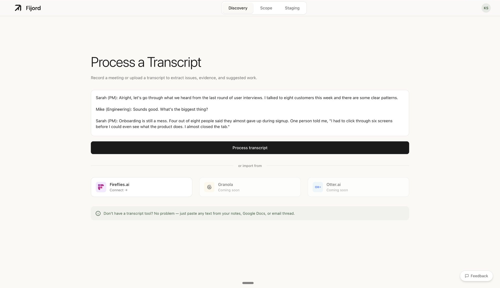
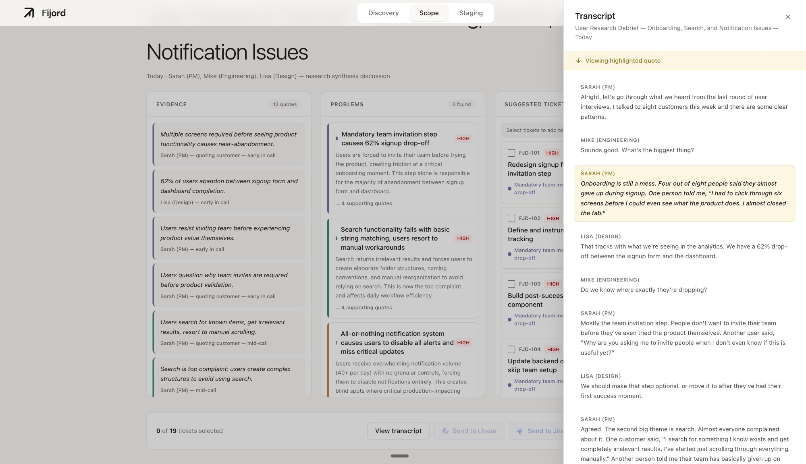
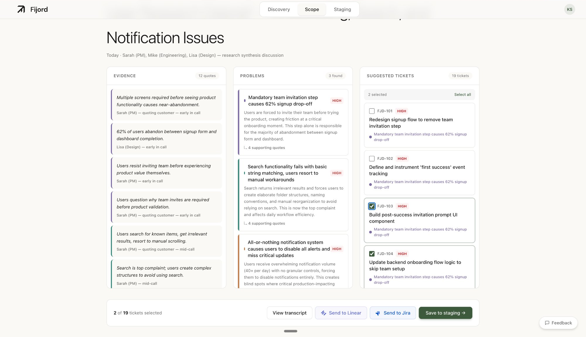
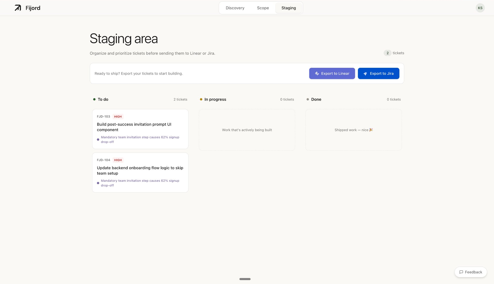
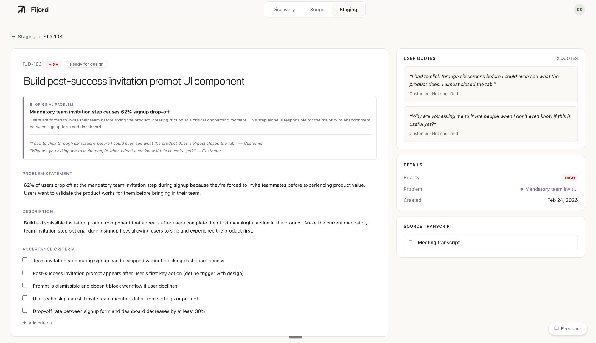

Product managers spend hours after every user interview doing the same tedious work: re-watching recordings, copying quotes into documents, synthesizing findings, and writing tickets manually.
The real cost isn't the time. It's that the evidence trail disappears. By the time a ticket reaches engineering, the original user quote is gone. When someone asks "why are we building this?", nobody can point to the source.
I interviewed six product managers ranging from Amazon to early-stage startups. The same pain point emerged across all of them:
"When I wasn't in that meeting, I didn't have full context on why we're even doing this."
Product Manager, Amazon
6
PM interviews conducted
14s
Average processing time
12→3
Quotes distilled to problems
The Solution
Fijord processes meeting transcripts and extracts problems backed by evidence, then generates tickets that can be exported directly to Linear or Jira. Every ticket maintains a link back to its source quotes.
Transcript
→
Evidence
→
Problems
→
Tickets
→
Linear / Jira
Step 1: Process a Transcript
fijord.app

Users paste a transcript or connect Fireflies.ai to import directly. The input is intentionally simple: one text area, one button.
Step 2: Evidence, Problems, and Tickets
fijord.app/scope
AI processes the transcript in 14 seconds and extracts 12 quotes, 3 problems, and 19 suggested tickets. The three-column layout lets users see the full chain from evidence to action.
Design Process
Evidence-First Layout
Early versions showed tickets first. But user testing revealed that PMs didn't trust AI-generated tickets without seeing the source. By leading with evidence (the actual user quotes), users can verify the AI's reasoning before accepting its suggestions.
The three-column layout mirrors the thinking process: What did users say? → What problems does that reveal? → What should we build?
BeforeTickets-first approach
Initial design led with AI-generated tickets. Users saw actionable output immediately, but had no way to verify if the tickets were based on real user feedback or hallucinated by the AI.
AfterEvidence-first approach
Reordered to show quotes first, then problems, then tickets. Users can trace every ticket back to a real user quote. Trust increased, and PMs felt confident exporting to their tools.
Step 3: Trace Back to Source
fijord.app/scope

Clicking any quote opens the transcript drawer with that moment highlighted. Users can see the full context of what was said, not just an extracted snippet.
Drawer, Not Column
The transcript could have been a permanent column. But that would make it compete for attention with the extracted content, which is the actual value.
Transcript lives in a slide-out drawer
The main view focuses on what Fijord extracted. The transcript is accessible when needed for verification, but doesn't dominate the interface.
Step 4: Select and Stage
fijord.app/scope

Users select which tickets to keep. Not every AI suggestion is right, so selection is explicit. Selected tickets move to a staging area before export.
Step 5: Organize Before Export
fijord.app/staging

The staging area is a simple kanban. Users can prioritize, edit, or remove tickets before sending them to their PM tool. Export buttons for Linear and Jira are always visible.
Step 6: Full Evidence Trail
fijord.app/staging/FJD-103

Each ticket preserves its lineage: the original problem, supporting quotes, and auto-generated acceptance criteria. When this exports to Linear, it includes a backlink to Fijord where anyone can see the full context.
The Backlink
This is the key insight that makes Fijord more than a transcript parser. Every exported ticket includes a shareable URL back to Fijord. When an engineer asks "why are we building this?", the PM can point them to the evidence.
The backlink requires no login. Anyone with the link can see the problem statement, supporting quotes, and original transcript context. Evidence that was trapped in a PM's notes is now accessible to the whole team.
Power Features: Signals
Processing one meeting is useful. But the real value emerges over time. Fijord detects patterns across meetings and surfaces them as "Signals" before users even notice the trend.
When the same theme appears in multiple meetings, with multiple users saying similar things, that's a signal worth paying attention to. Signals can be promoted to Epics when they're ready for action.
Signal Detail (Prototype)Interactive: explore the evidence groupings
Signals show strength (how many meetings mention this theme), all supporting quotes grouped by meeting, and a timeline of how the signal emerged. Users can promote strong signals to Epics when ready to take action.
Why Signals Matter
A single user complaint might be an edge case. But when 5 users across 3 months all mention "onboarding confusion," that's a pattern the team needs to address.
Fijord tracks this automatically. No spreadsheet, no manual tagging. Just process your meetings and let the patterns emerge.
Outcomes
Designed & In Development
Full transcript-to-tickets flow, Linear/Jira integrations, backlinks, and Signals system
User Validation
"That full lineage from messy call data to the ticket, that's what speaks to me." (Amazon PM)
What I Learned
Evidence before action. Users don't trust AI outputs without seeing the source. Show the quotes first.
Backlinks are the moat. Anyone can extract text from a transcript. Preserving the evidence trail is what makes this valuable long-term.
Design engineer velocity. Being able to implement my own designs cut iteration cycles from days to hours.
Let's Chat
I'm looking for product design and design engineering roles where I can ship real products. If you're building something interesting, I'd love to hear about it.